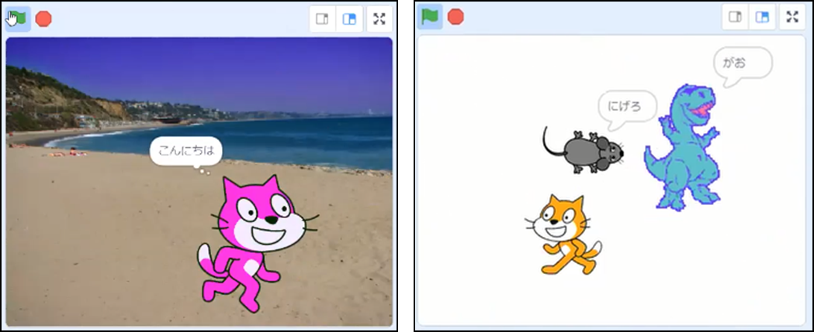

第1回開催報告
NPO青梅こども未来「プログラミング体験会」
東京都最西端の「CoderDojo 青梅」の第1回を開催できました。昨年11月と12月にイベントサイトで募集をしたものの参加者が集まらず悩んでいたところ、「NPO青梅こども未来」のみなさまとその放課後塾「vivoくらぶ」のみなさまの強力なご協力があって、小学生４年生以下９名のニンジャが参加してくれました。位置付けとしては、２月３月にそれぞれ予定している本番オンラインイベントのための準備であるScratchのプログラミング体験会になります。つまり２月と３月にもイベントを予定します。
参加してくれたニンジャ9名のうち半分以上がScratchが初めてだったので、CoderDojo 立川と調布のメンターにも応援に駆けつけていただき全部で６組のブレークアウトルームに分かれてそれぞれで「ねこにげゲーム」をベースにScratch作品制作を行いました。

同じ「ねこにげ」であっても、選ぶキャラクターや背景に子ども達の個性が出るのが楽しいところです。
少しScratchの経験がある子は、コードを思い出しつつ、ボールが地面から跳ねるアニメーションを制作してくれました。中級から使う定義ブロックや色に触れたらブロックなどしっかり覚えていた様子で記憶力/習得力がすごいなと感心。

キッチンカーに乗せられて移動するペンギン。クマや食事なのかな舞台の制作ではキャラクタ選びを楽しんでくれました。

カニが逃げる。ネコにぶつかる度に増殖するクローンねこ。この数のネコから逃げるカニはゲームの難易度を高めていく。。。
ネコに追われて逃げるネズミのシーンであっても、何だかメルヘンチックに楽し気な雰囲気が漂います。

今日は３連休の真ん中の日曜日でしたが、多くのみなさまに集まっていただき楽しい時間を過ごしました。参加いただいた保護者の皆様、ありがとうございました。
NPO青梅こども未来
“青梅こども未来”は『この街で子育てできて良かった』と思える街づくりをミッションに、子育てプログラム・子育てひろばを青梅市内でさまざま運営しているNPO法人です。